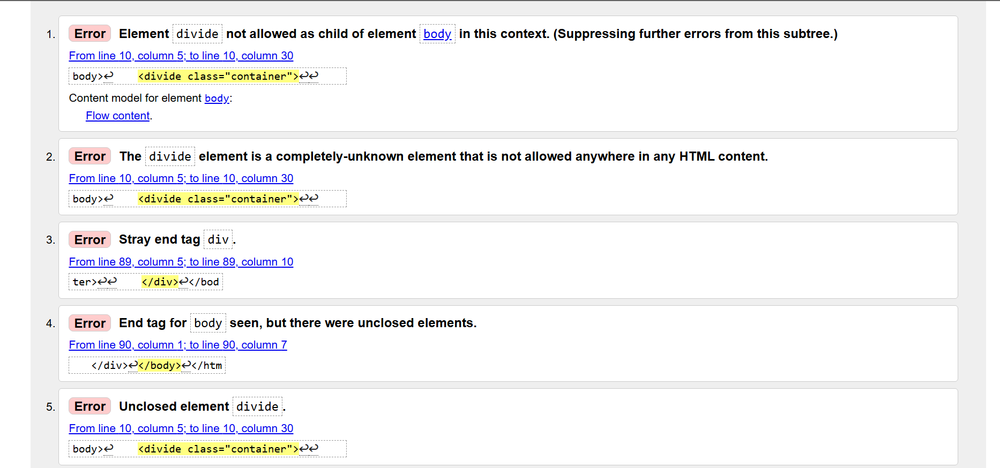
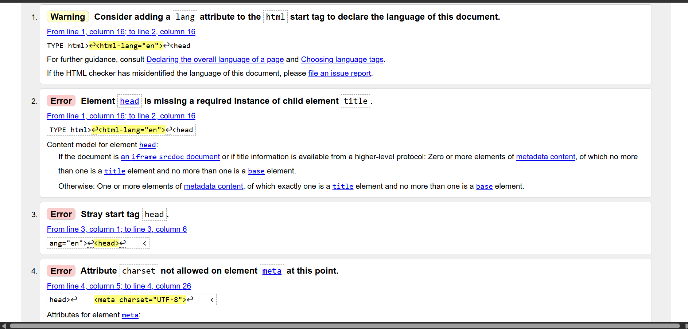
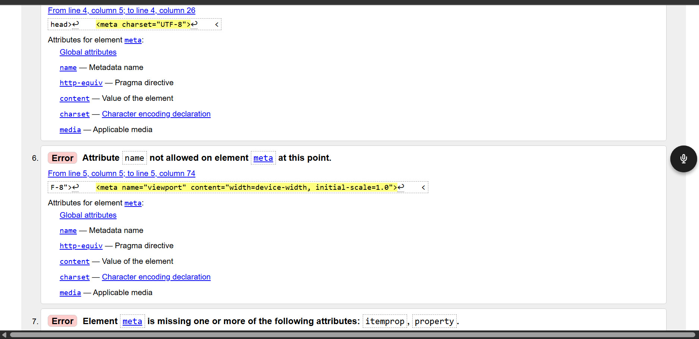
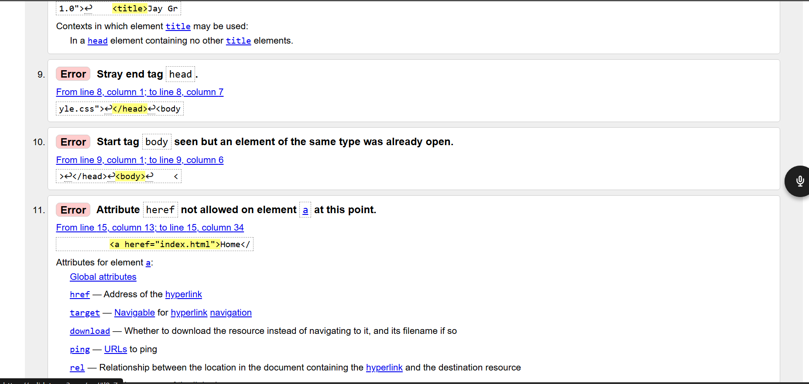
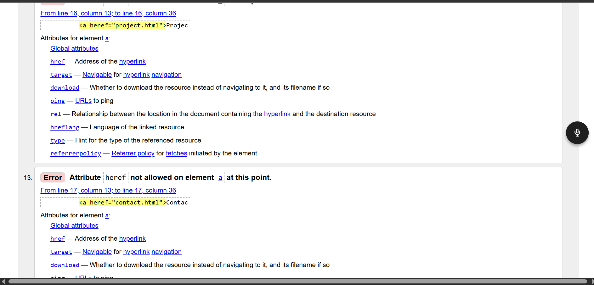
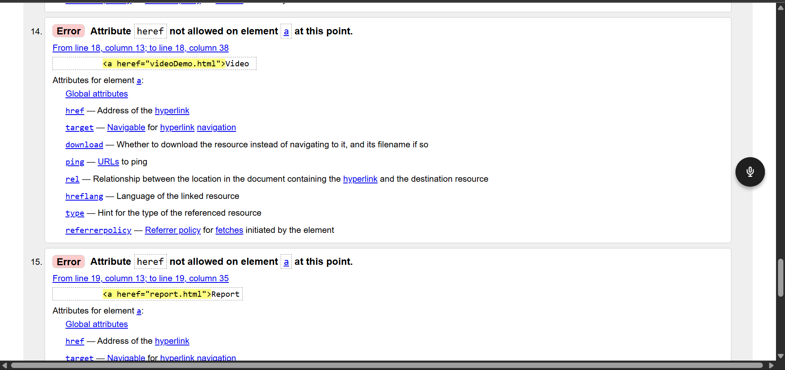
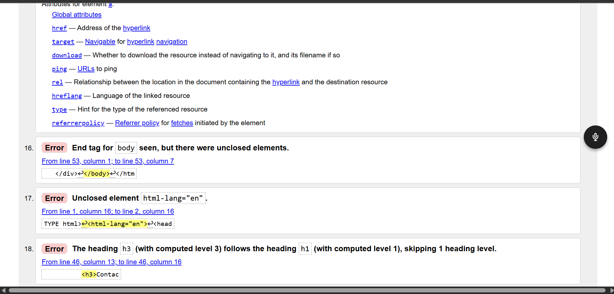

My Web Development Journey
Through this project, I got to know the fundamentals of the HTML and CSS language, and how to create a rudimentary webpage on my own. It was really confusing to me at the beginning, particularly how one section of the code relates with another. Eventually I became more at ease with writing code and laying my pages out in an orderly manner.
The primary lessons included the understanding of the process of constructing my online site structure with the help of CSS Grid. This made me stay consistent with all my pages, which were coherent with a header, navigation bar, content area, and a footer. I also got to know how to make my website responsive with media queries in order to be used on small screens such as phones.
To be as easy as possible I attempted to make my design plain and simple. I used simple colours and ensured that the text can be read. The site also features some minor details, such as hover effect and basic animation on the header to ensure the site looks a little bit more appealing.
During the construction of the site, I had little issues. As an example, my pictures were initially not appearing due to file name problems, and occasionally, my layout would fail when I would scale-up the page. These issues were corrected by checking my code against different solutions until I got it to work.
On the whole, the given project allowed me to enhance knowledge of web development. I am better equipped with HTML and CSS. I would also like to enhance my design in the future and learn JavaScript and make my websites more interactive.
Validation
Below are screenshots showing the validation process of my website. These show errors and warnings I encountered and helped me fix issues in my HTML structure and code.
Validation Screenshot 1

Validation Screenshot 2

Validation Screenshot 3

Validation Screenshot 4

Validation Screenshot 5

Validation Screenshot 6

Validation Screenshot 7
